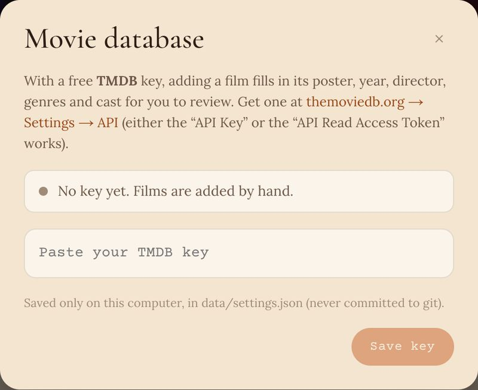

1
Connect the movie database
Optional, but it fills in posters, the story, director and cast for you. Make a free account at themoviedb.org, then go to Settings › API and copy your key (either the API Key or the API Read Access Token works).
Click the key button at the top right of Movie Library and paste it. The dot turns green once you're connected.
The key is saved only on your computer.
